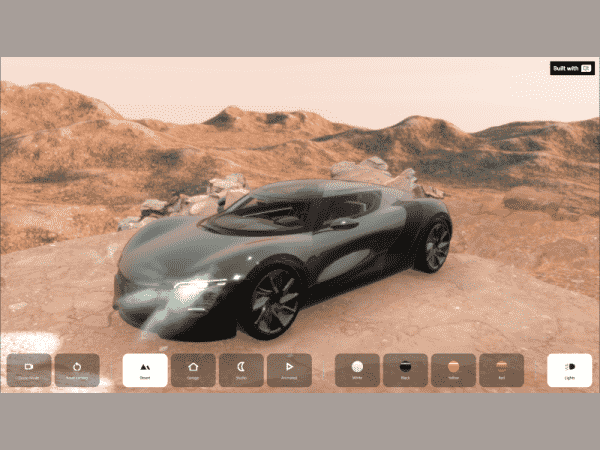

Car Configurator
A car model example that demonstrates using Qt Quick 3D cameras, extended scene environment and Qt Quick 3D.

Running the Example
To run the example from Qt Creator, open the Welcome mode and select the example from Examples. For more information, visit Building and Running an Example.
Overview
Car Configurator shows a car in different scene environments and in different colors. It's implemented with QML and relies on a number of Qt modules, most prominently Qt Quick and Qt Quick 3D.
Note: This example does download some assets from an internet server at runtime. Therefore, you will need an internet connection when launching it for the first time.
You can interact with the car model in two modes:
- Demo Mode
- User mode
Demo Mode
The camera perspective moves along different paths and shows different views of the car.
Reset Camera
The camera moves to its initial position.
Scene environments
There are four scene environments available for this example:
- Desert
- Garage
- Studio
- Animated
Car Colors
There are four colors available for the car:
- White
- Black
- Yellow
- Red
Lights
You can turn the lights of the car on and off.